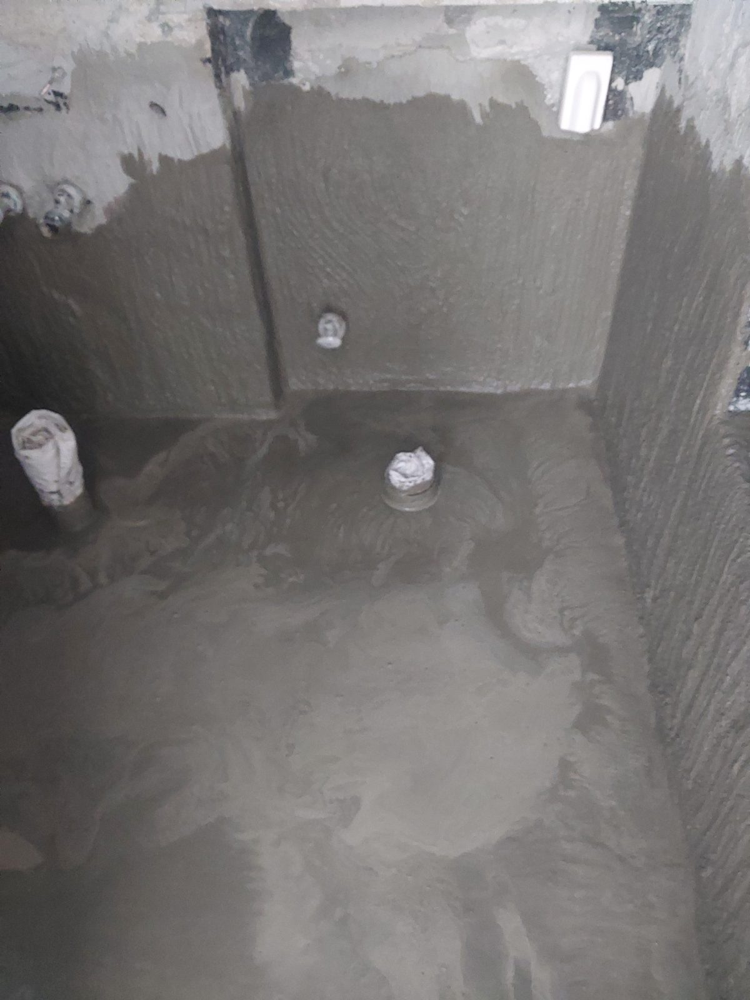
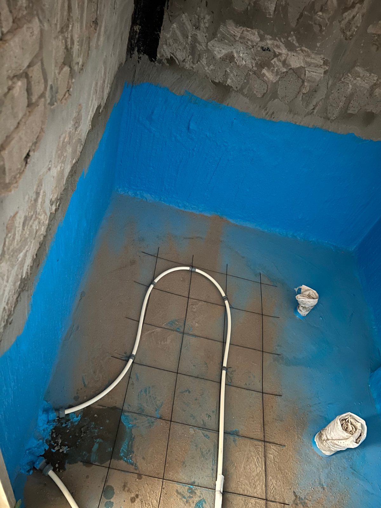

세종 범지기마을 욕실 방수 1·2차 — 두 세대를 같은 기간에 시공했습니다

방수층 수명이 다한 두 세대의 욕실을 같은 기간에 1·2차 방수로 다시 잡은 현장입니다. 방수를 두 번에 나눠 바르는 이유를 함께 정리했습니다.
어떤 공사였나요
같은 단지 안 서로 다른 두 세대의 욕실 방수를 같은 기간에 진행한 현장입니다. 욕실 누수의 상당수는 배관이 아니라 방수층 노후가 원인입니다. 방수층이 삭으면 바닥 슬래브로 물이 스며들어 아랫집 천장으로 나옵니다.

방수를 두 번에 나눠 바르는 이유
방수는 한 번에 두껍게 바르는 것보다 1차 도포 후 완전히 건조시키고 2차를 올리는 것이 원칙입니다. 건조 시간을 아끼면 방수층 안에 수분이 갇혀 오히려 들뜹니다. 일정이 급해도 이 부분은 타협하지 않습니다.
진행 순서
바닥과 벽 하단까지 1차 방수를 올리고, 건조를 확인한 뒤 2차 방수를 도포했습니다. 두 세대를 같은 기간에 진행해 자재와 일정을 효율화하고, 각 세대 상황에 맞춰 순차적으로 마감했습니다.

이런 신호가 있으면 점검하세요
욕실 실리콘이 검게 갈라져 있으면 물이 벽 뒤로 돌기 시작했다는 신호입니다. 실리콘 보수만 제때 해도 방수층 수명이 늘어납니다.